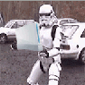

Donations
ModMii is entirely free to use and ad free. Donations can optionally be made to the author using the details below, or pick your favourite contributor from the credits and check if they have a donations page.
bitcoin: 19dw3v7S5XQMPKvLZcCvkmM5zmHhQKtHHc bitcoincash: qr7esmwnqn4mxqltrmdyf3dj9e4d25pspyxufdr2zq
If you want to send a donation another way you can reach me at xflak40@gmail.com, or message me on discord at XFlak#9897, or PM me on gbatemp.
About the author
ModMii started out as a small side-project back in 2010 as a simple NUS Auto Downloader script, and now the changelog is taller than me! I started this project in my 20s in my spare time and since then I've gotten married and had not 1, not 2, not 3, but FOUR boys, all ~2 years apart. I love being able to share my love for gaming and for the Wii with them, and with all of you! This is a passion project that has easily taken over 4000-5000 hours of just my time alone, and that's not counting all the hours spent from the legions of devs and testers who've supported ModMii over the years.
Not knowing that much about computers other than some excel tricks, I slowly built more advanced features on top of my original less efficient code that I'd love to rewrite if it wasn't such a daunting task. Throughout the journey I learned a lot from not just those in the credits list, but the incredibly supportive Wii community as a whole. I've gone from just being a "numbers guy" to my family's go to "tech guy", and I have this project, community and followers to thank for it.

- XFlak